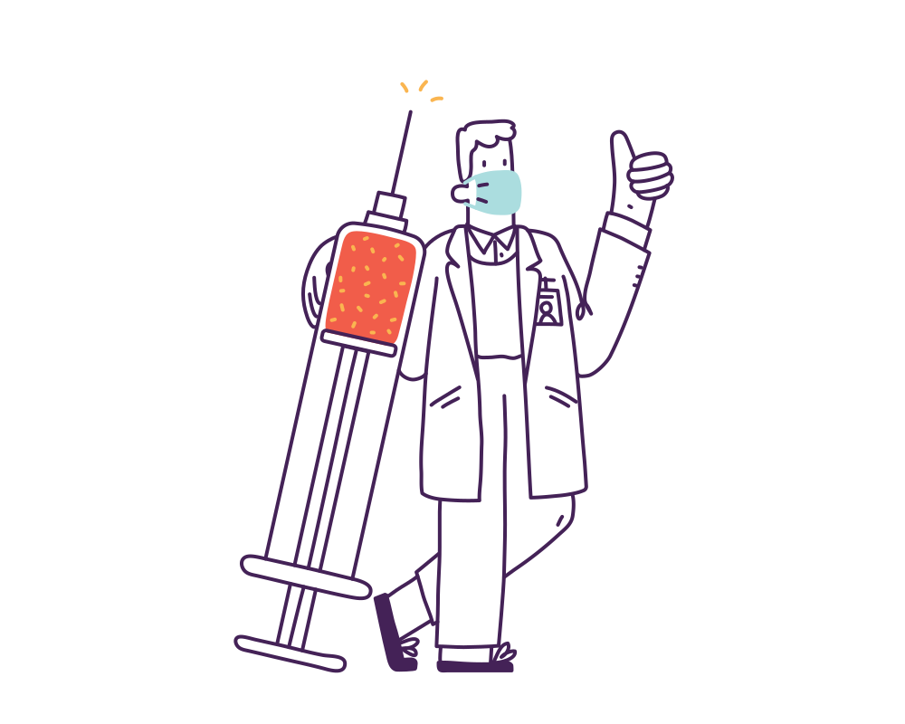

How to protect yourself and others:
Get Vaccinated

- Authorized COVID-19 vaccines can help protect you from COVID-19.
- You should get a COVID-19 vaccine when it is available to you.
- Once you are fully vaccinated, you may be able to start doing some things that you had stopped doing because of the pandemic.
- India's Covaxin, the homegrown government-backed vaccine.
- has an efficacy rate of 81%, preliminary data from its phase 3 trial shows.
Wear a mask

- Everyone 2 years and older should wear masks in public.
- Masks should be worn in addition to staying at least 6 feet apart, especially around people who don’t live with you.
- If someone in your household is infected, people in the household should take precautions including wearing masks to avoid spread to others.
- Wash your hands or use hand sanitizer before putting on your mask.
- Wear your mask over your nose and mouth and secure it under your chin.
- Fit the mask snugly against the sides of your face, slipping the loops over your ears or tying the strings behind your head.
- Make sure you can breathe easily.
Avoid crowds and poorly ventilated spaces

- Being in crowds like in restaurants, bars, fitness centers, or movie theaters puts you at higher risk for COVID-19.
- Avoid indoor spaces that do not offer fresh air from the outdoors as much as possible.
- If indoors, bring in fresh air by opening windows and doors, if possible.
- In your home: Avoid close contact with people who are sick.
- Put 6 feet of distance between yourself and people who don’t live in your household.
- Remember that some people without symptoms may be able to spread virus.
Wash your hands often

- Wash your hands often with soap and water for at least 20 seconds especially after you have been in a public place, or after blowing your nose, coughing, or sneezing.
- It’s especially important to wash: Before eating or preparing food, Before touching your face, After handling your mask
- If soap and water are not readily available, use a hand sanitizer that contains at least 60% alcohol. Cover all surfaces of your hands and rub them together until they feel dry.
- Avoid touching your eyes, nose, and mouth with unwashed hands.